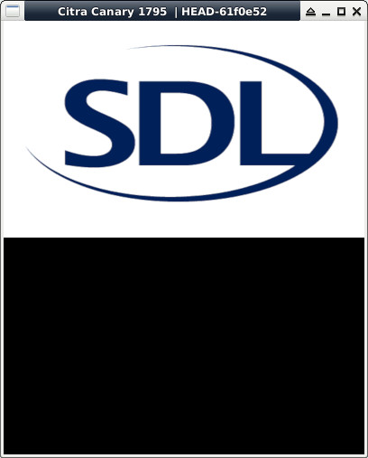

參考資訊：
https://libctru.devkitpro.org/index.html
https://github.com/devkitPro/3ds-examples
main.c
#include <stdio.h>
#include <stdlib.h>
#include <SDL.h>
int main(void)
{
SDL_Surface *screen = NULL;
SDL_Init(SDL_INIT_VIDEO);
screen = SDL_SetVideoMode(400, 240, 16, SDL_HWSURFACE);
SDL_Surface *bmp = SDL_LoadBMP("main.bmp");
SDL_Surface *t = SDL_ConvertSurface(bmp, screen->format, 0);
SDL_SoftStretch(t, NULL, screen, NULL);
SDL_FreeSurface(t);
SDL_Flip(screen);
SDL_Delay(3000);
SDL_FreeSurface(bmp);
SDL_Quit();
return 0;
}
P.S. 用來轉換Pixels像素格式，如：main.bmp是32Bits，則可以轉換成16Bits，方便處理
完成
